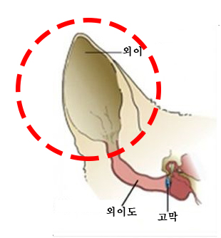

1. 고양이의 뛰어난 청각
①청력 범위: 고양이의 청력 범위는 48Hz~85,000Hz입니다. 이는 인간의 20Hz~20,000Hz
개의 40Hz~60,000Hz 보다 더 넓은 청각 스펙트럼을 가지고 있습니다.
②고주파 감지: 고양이는 초음파 수준의 소리도 감지할 수 있습니다. 이는 쥐나 작은 곤충이
내는 미세한 고주파를 들을 수 있다는 것이기도 하고 그만큼 사냥에 유리하다고 할 수 있습니다.
③소리 방향 감지 정확도: 고양이는 최대 5%이내의 오차로 소리의 방향을 감지할 수 있습니다.
④거리 감지 능력: 고양이는 최대 20m 떨어진 소리도 정확하게 들을 수 있습니다.
2. 고양이 귀의 구조와 특성
①귀 근육: 고양이의 귀는 32개의 근육으로 이루어져 있어 최대 180도까지 회전이 가능합니다.
②삼각형 외이: 고양이의 귀는 깔때기 형태로 모양이 잡혀있어 작은 소리도 잘 모아줍니다.

③양쪽 귀 독립 조절: 고양이는 서로 다른 방향으로 귀를 움직여 다각도에서 소리를
감지할 수 있습니다.
3. 청각의 역할
①사냥 도구: 고양이의 귀는 사냥하는데 도움이 많이 되는데, 특히 초음파를 듣고 설치류 등의
위치를 파악할 수 있습니다.(특히 야간에 더 유리)
②사회적 소통: 고양이는 귀를 소통을 하는데에도 많이 쓰는데, 사람의 목소리 톤과
말소리 속 감정을 구분할 수 있습니다.
③스트레스 감지: 고양이는 사람의 싸우는 소리, 갑작스러운 물체의 낙하음 등에 강한
스트레스 반응을 보입니다.